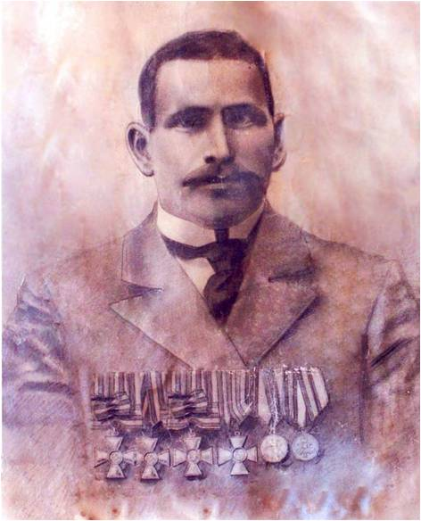

Лобанов Георгий Степанович
(2.05.1876 - 1.03.35)
Полный кавалер Георгиевских крестов всех 4-х степеней.
Родился в д. Помеловка Городецкой волости Никольского уезда, впоследствии Городецкого сельсовета Кичменгско-Городецкого района.
В 1897 г. был призван в Военно-Морской флот Его Императорского Величества в г. Кронштадт в Минную школу. Служил на канонерской лодке «Гиляк» минным квартирмейстером. Участник Русско-японской войны 1904-1905 годов и обороны базы ВМФ России Порт-Артура в Китае. Г.С. Лобанов, как и другие члены экипажа этого маленького, но героического корабля, участвовал в подавлении «боксерского» восстания, повседневной дозорной службе и боях на море под Порт - Артуром, а затем был включен в состав десантного отряда и принял участие в обороне крепости на сухопутном фронте. При сдаче Порт-Артура он был взят в плен и вернулся на родину только после окончания войны.
За проявленные мужество и отвагу в боевых действиях был удостоен всех четырех степеней Знака отличия Военного ордена, то есть был награжден Георгиевскими крестами 4-х степеней:
4-й степени – за отличие 20 апреля 1904 г.,
3-й степени – за отличие 25 ноября 1904 г.,
2-й степени – за отличие 18 декабря 1904 г.,
1-й степени – за отличие также 18 декабря 1904 г.
Помимо Георгиевских крестов, Г.С.Лобанов был награжден положенной всем защитникам Порт-Артура серебряной медалью в память Русско-японской войны и медалью за поход в Китай 1900-1901 гг. По инициативе и поддержке администрации района в сквере Победы в день празднования села Кичменгский Городок 8 августа 2008 года установлен бюст, изготовленный художником В. Кучумовым.
Родился в д. Помеловка Городецкой волости Никольского уезда, впоследствии Городецкого сельсовета Кичменгско-Городецкого района.
В 1897 г. был призван в Военно-Морской флот Его Императорского Величества в г. Кронштадт в Минную школу. Служил на канонерской лодке «Гиляк» минным квартирмейстером. Участник Русско-японской войны 1904-1905 годов и обороны базы ВМФ России Порт-Артура в Китае. Г.С. Лобанов, как и другие члены экипажа этого маленького, но героического корабля, участвовал в подавлении «боксерского» восстания, повседневной дозорной службе и боях на море под Порт - Артуром, а затем был включен в состав десантного отряда и принял участие в обороне крепости на сухопутном фронте. При сдаче Порт-Артура он был взят в плен и вернулся на родину только после окончания войны.
За проявленные мужество и отвагу в боевых действиях был удостоен всех четырех степеней Знака отличия Военного ордена, то есть был награжден Георгиевскими крестами 4-х степеней:
4-й степени – за отличие 20 апреля 1904 г.,
3-й степени – за отличие 25 ноября 1904 г.,
2-й степени – за отличие 18 декабря 1904 г.,
1-й степени – за отличие также 18 декабря 1904 г.
Помимо Георгиевских крестов, Г.С.Лобанов был награжден положенной всем защитникам Порт-Артура серебряной медалью в память Русско-японской войны и медалью за поход в Китай 1900-1901 гг. По инициативе и поддержке администрации района в сквере Победы в день празднования села Кичменгский Городок 8 августа 2008 года установлен бюст, изготовленный художником В. Кучумовым.